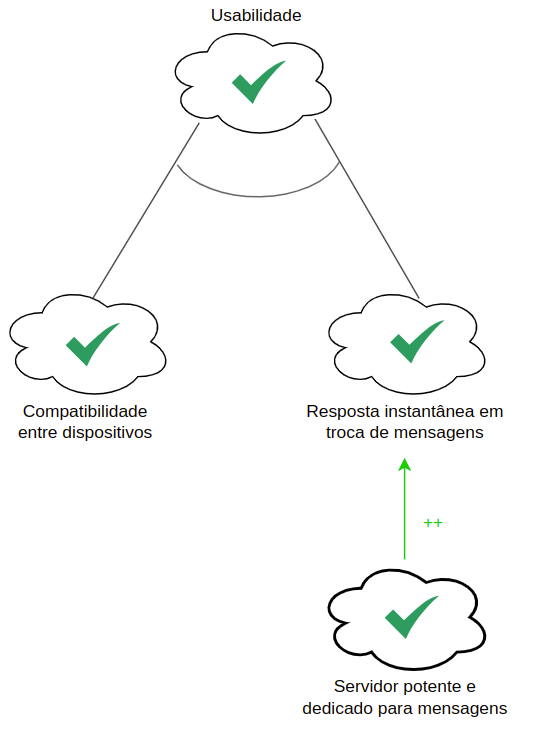
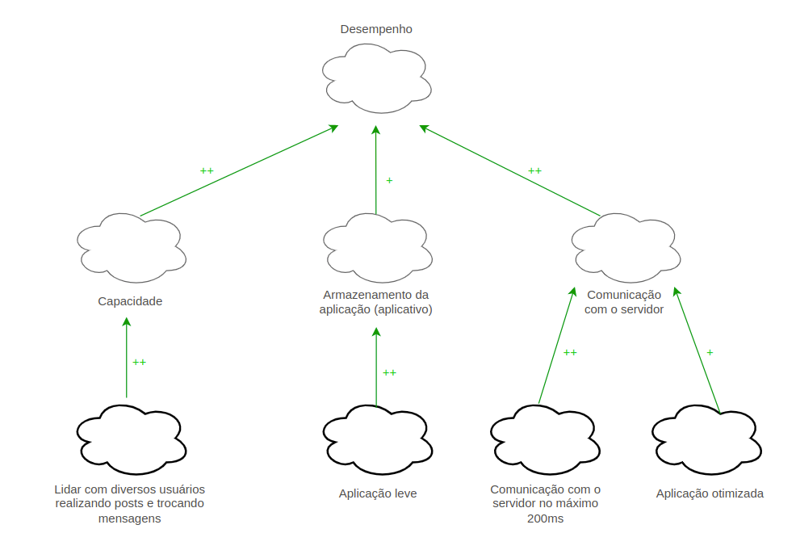
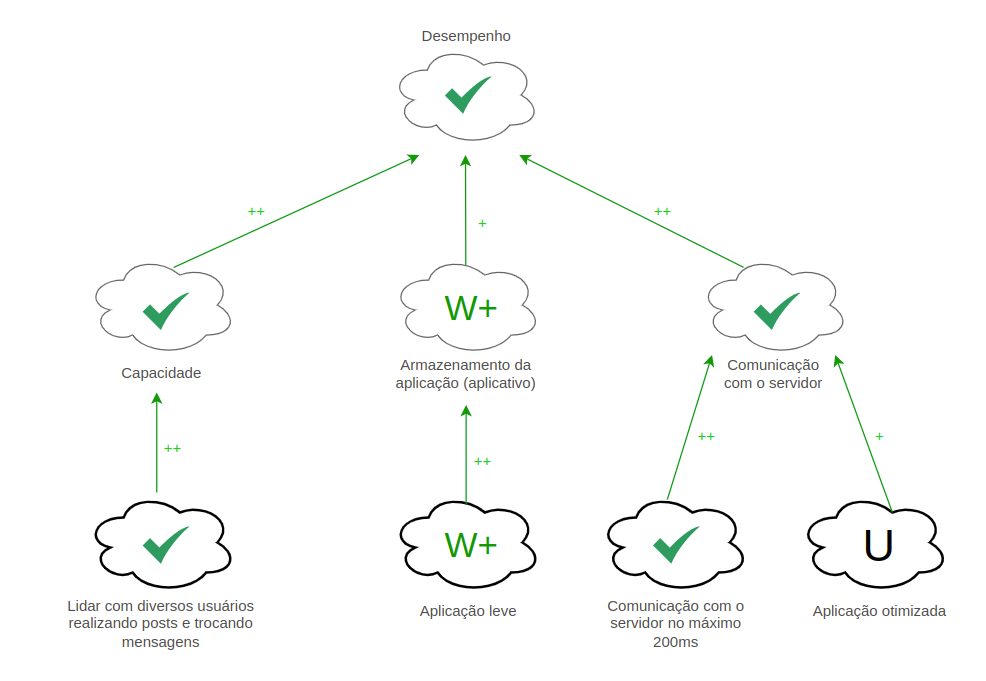
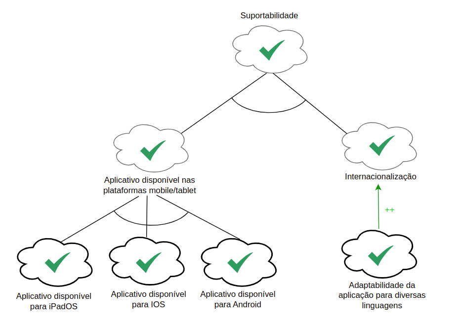

NFR Framework
Histórico de Versões
| Data | Versão | Descrição | Autor(es/as) | Revisor |
|---|---|---|---|---|
| 03/01/2023 | 0.1 | Elaboração do NFR | Guilherme Barbosa | Letícia Aires e Samuel Castro |
Introdução
O NFR Framework é uma abordagem para representar e analisar os Requisitos Não-Funcionais de um software. Tem como objetivo ajudar na implementação de soluções personalizadas, levando em consideração as características do domínio e do sistema em questão, a partir da utilização do modelo SIG (Softgoal Independency Graph).
Softgoals
- Softgoal NFR: São características abstratas que são postas a análises visando saber se a mesma será cumprida ou não, ou seja, será escolhida ou não para ser implementada. No fundo, são requisitos não funcionais categorizados em critérios/atributos de qualidade.
- Softgoal de Operacionalização: Representam as funcionalidades como uma forma concreta de viabilizar ou não as características abstratas.
- Softgoal de Afirmação: Aqui entram as características externas de cada softgoal, ou seja, são consideradas e refletidas na decisão, justificando a priorização do softgoal.

Decomposições
As decomposições podem ser divididas em 4 grupos e servem como um refinamento para obter os softgoals mais especializados. As divisões são:
- Decomposição de Softgoal NFR: Refina ou subdivide um softgoal NFR em outros específicos. Divide problemas grandes em menores e ajuda a lidar com ambiguidades e prioridades.
- Decomposição de Operacionalização: Realiza a subdivisão de um softgoal de operacionalização em outros softgoals de operacionalização mais específicos. Ajuda a definir uma solução geral e depois refiná-las em soluções mais específicas.
- Decomposição de Afirmação: Refina um softgoal de afirmação em outros softgoals de afirmação. Ajuda a apoiar ou negar justificativas específicas que ocorrem no projeto.
- Priorização: Refina um software em outro softgoal com o mesmo tipo e tópicos, mas com uma prioridade associada.
Contribuições
As contribuições representam como um softgoal descendente contribui para a satisfação de um softgoal ascendente, podendo ser positivas ou negativas, ou até mesmo satisfazendo por completo o ascendente.
Tipos de contribuições utilizadas pelo framework:
- AND: O ascendente é satisfeito se somente se todos os descendentes forem satisfeitos
- OR: O ascendente é satisfeito se um dos descendentes for satisfeito
- MAKE(++): O descendente com contribuição tão positiva a ponto de satisfazer o ascendente
- BREAK(--): O descendente com contribuição tão negativa a ponto de negar o ascendente
- HELP(+): O descendente com contribuição positiva parcial, que sozinho não satisfaz o ascendente
- HURT(-): O descendente com contribuição negativa parcial, que sozinha não chega a negar o ascendente
- UNKNOWN: O ascendente não afeta o pai
- EQUAL: Determina que o softgoal descendente só será satisfeito se o softgoal ascendente for satisfeito e que softgoal descendente será negado se o softgoal ascendente for negado.
- SOME(+/-): O descendente com contribuição (positiva ou negativa), onde a intensidade não se pode determinar
Metodologia
A elaboração dos diagramas SIG foram construídas a partir dos requisitos não funcionais da Especificação Suplementar. Abordamos os NFRs através de uma decomposição desses requisitos em um nível operacional, garantindo que as necessidades dos clientes sejam atendidas.
Legenda
Utilizamos os tipos de rótulos utilizados pelos softgoals do framework, representadas na Figura 2, bem como as setas das contribuições na Figura 3. E os softgoals seguindo o padrão representado na Figura 1.


Gráfico de Interdependencia de Softgoal (SIG)
Usabilidade

Usabilidade Propagação

Confiabilidade

Confiabilidade Propagação

Desempenho

Desempenho Propagação

Suportabilidade

Suportabilidade Propagação

Referências
SILVA, Reinaldo Antônio da. NFR4ES: Um Catálogo de Requisitos Não-Funcionais para Sistemas Embarcados. Universidade Federal de Pernambuco, Recife, 2019. 2.4 - NFR Framework.
PARADKAR, Mastering Non-Functional Requirements. Universidade Federal de Pernambuco, Recife, 2017.
SERRANO, Maurício; SERRANO, Milene; Requisitos - Aula 17. Disponível em: https://aprender3.unb.br/pluginfile.php/2307541/mod_resource/content/1/Requisitos%20-%20Aula%20019a.pdf. Acesso em: 03 jan. 2023.